Riktig utstyr for jobben
Maskinparken vår gir oss fleksibilitet til å løse både små og større oppdrag. Vi kombinerer tradisjonelt verkstedhåndverk med CNC-kapasitet.
- Platesaks, maks 3 150 × 6,3 mm
- Planslipemaskin 200 × 600 mm
- Rundsliping og tannstikking
- Fresemaskin og boremaskin
- Revolver- og CNC-dreiebenker
- Maskineringssenter og båndsag
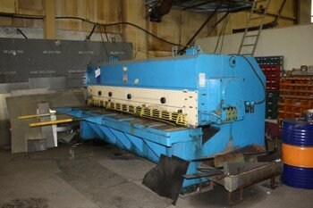
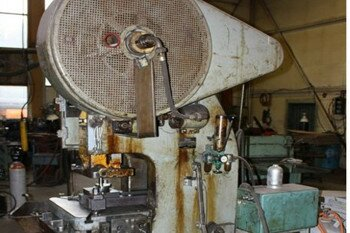
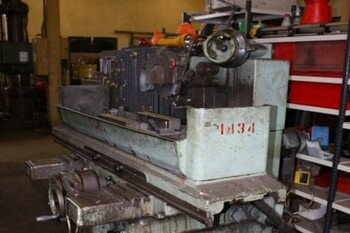
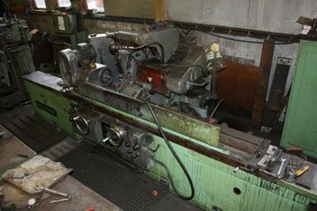
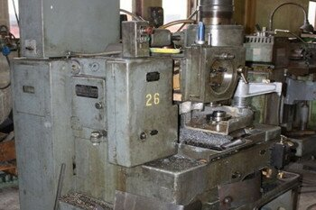
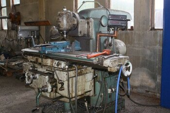
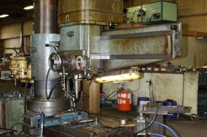
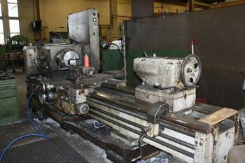
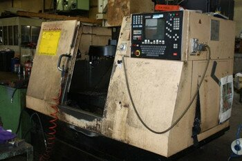
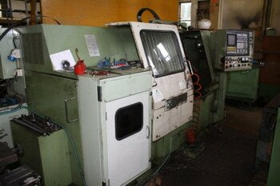
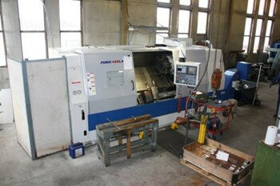
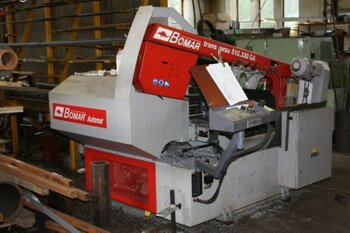